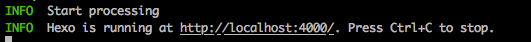
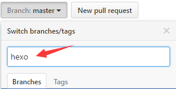

GitHub + Hexo
GitHub Pages是GitHub提供的一项免费服务.每个GitHub账号可以申请一个pages仓库用来存放网页文件.而GitHub在已经安装好了服务器程序以便于浏览器访问这些网页.由于GitHub Pages不支持php和数据库,因此只能在上面部署静态博客框架.
Hexo也是现在使用比较广的,也比较简单部署的静态框架.所以我们选择GitHub pages + Hexo来部署我们的博客.
使用hexo搭建部署Github博客
初始化博客
|
|
配置博客_config.yml
|
|
如果需要了解更多hexo的配置或者想要做更高级的定制,可以查看官方配置说明
发表一篇文章
在终端命令行输入hexo new 文章标题
我们可以在本地博客文件夹source->_post文件夹下看到我们新建的markdown文件。
|
|
保存后，我们进行本地发布 $ hexo server

发布博客到GitHub Pages
我们只要在终端执行这样的命令即可：
或者:
上传博客工程
上一步部署博客到Github以后，我们可以在Github仓库的master分支上看到我们上传的博客文件。
但是这个博客文件是不包含hexo配置的，所以我们需要新建分支，使用git指令将带hexo配置的Github工程文件上传到新建的分支上。

在本地博客根目录下使用git指令上传项目到Github:
其他设备上clone下Github上新建的分支的文件到本地
在另一台设备上使用git指令下载Github新建分支上的文件:
本地写文章
在source->_posts文件夹下新建md文件，并编辑好保存后：
同步项目源文件到Github